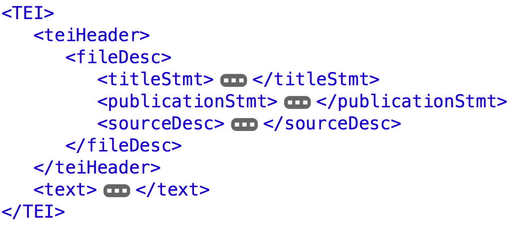
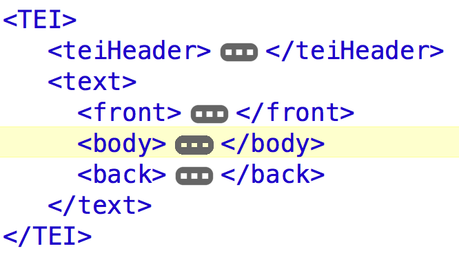
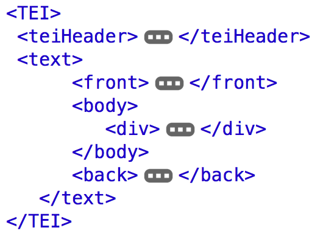

Data, XML, Text edition
Humanistyka cyfrowa dla przyszłości
18-22.10.2021, Międzygórze/Wrocław
Digital Humanities & textual data

"The Lego Data Story", Stanford University, 4.09.2021
- datum (latin: “what is given”); raw data ≠ ready to use.
- Need to be located, generated, systematized and interpreted.
- Input data, output data
- Unstructured, structured, semi-structured data.
- ¿Big data in the humanities?
1605 Miguel de Cervantes published the first part of Don Quixote.
<date>1605</date> <persName>Miguel de Cervantes</persName> published the first part of <title>Don Quixote</title>
Miguel de Cervantes wrote Don Quixote
Procedural
Miguel de Cervantes wrote Don Quixote Descriptive
MarkupMiguel de Cervantes wrote Don Quixote
Visualizationname {font-weight: bold;} title {font-style: italic;}
Process<xsl:for-each select="//name">
XML Golden Rules
An element consists of a start-tag, optional content, and an end-tag. <persName>Miguel de Cervantes</persName>
An element may have attributes, each consisting of a name and a value. Miguel de Cervantes
An XML document may contain processing instructions or comments.<? xml-stylesheet type="text/css" href="visualize-tei-xml.css"?>
Elements and attributes are case sensitive. <name> ≠ <Name>
Empty elements can use a minimized tag syntax. <pb/> =
TEI: Text Encoding Initiative
-
"The Text Encoding Initiative (TEI) is a consortium which collectively develops and maintains a standard for the representation of texts in digital form."
- Platform independence;
- TEI P5: Version 4.3.0. Last updated on 31st August 2021
TEI basic structure (root element = <TEI>)

TEI basic structure
<teiHeader>

TEI basic structure
<teiHeader>
TEI basic structure
<text>
TEI basic structure
<text>
TEI basic structure
<text>

Classes of elements
Verse and name annotation
<body>
<persName>Doris</persName>, qui sait qu'aux vers quelquefois je me plais,
Me demande un sonnet, et je m'en désespère:
Quatorze vers, grand Dieu! Le moyen de les faire?
En voilà cependant déjà quatre de faits.
</body>
Atributtes inside of elements
Provides a unique identifier for any element: @xml:id
Provides a name or number for any element: @n
Specifies the language of any element: @xml:lang
Characterizes the element in some sense: @type
Specifies the visual appearance (rendition): @rend, @style, @rendition Atributtes and elements
<body>
Doris, qui ſait qu'aux vers quelquefois je me plais,
Me demande un Sonnet; & je m'en deſeſpere:
Quatorze vers, grand Dieu! le moyen de les faire!
En voilà cependant desja quatre de faits.
</body>
Metatextual markup for editions
Enriched with corrections, regularizations, expansions
Groups alternative encodings:
Apparent error:
Corrected error:
Original form:
Regularized form: Markup for corrections
<body>
Doris, qui ſait qu'aux vers quelquefois je me plais,
Me demande un Sonnet; & je m'en deſeſpere:
Quatorze vers, grand Dieu! le moyen de les faire!
En voilà cependant
desja
déjà
quatre de faits.
</body>Critical Apparatus, Dictionaries, Manuscript Description, Bibliographies, ...
nearly 500 elements
Guidelines

References
- A Gentle Introduction to XML, Guidelines for Electronic Text Encoding and Interchange, TEI P5: Version 4.2.2.
- Lou Burnard (2014), What is the Text Encoding Initiative? How to add intelligent markup to digital resources , Marseille: OpenEdition Press.
- Terras, Melissa M., Julianne Nyhan, and Edward Vanhoutte, eds. 2013. Defining Digital Humanities: A Reader. Farnham, Surrey, England : Burlington, VT: Ashgate Publishing Company.
José Luis Losada Palenzuela, Markup, XML, TEI, <http://editio.github.io/presentations/interreg_workshop.html>, 2021.